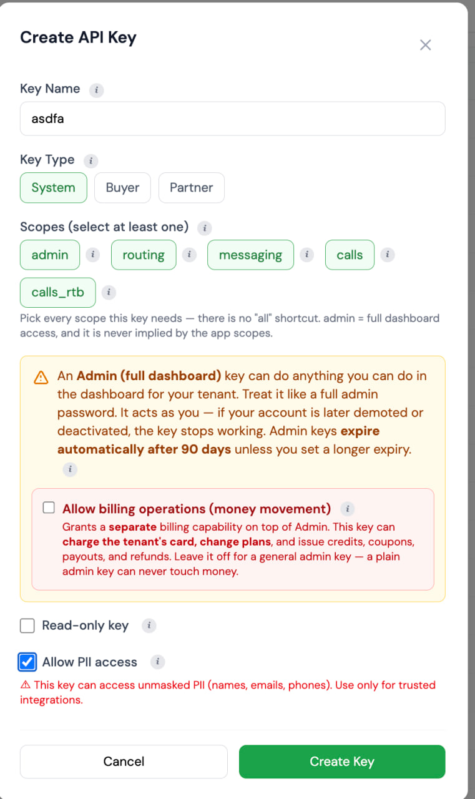

Getting started · theleadrouter.com
Welcome to The Lead Router
Set up a personal AI assistant that knows the platform inside and out and can work with your account for you. Four steps, no technical experience needed. This guide is also available online with clickable links at github.com/iscale-llc/theleadrouter.com-onboarding.
This is your getting-started kit for The Lead Router — everything you need to set up a personal AI assistant that knows the platform inside and out and can work with your account for you.
You don't need to be technical. There are four steps, and each one is spelled out below. When you're done, you'll be able to ask your assistant things like "How many leads came in yesterday, and where did they go?" or "Walk me through setting up a new campaign" — and it will know how to answer, because this kit contains the full user manual and the complete API reference for theleadrouter.com.
What you'll do
| Step | What | Time |
|---|
| 1 | Get your API key from The Lead Router | ~2 min |
| 2 | Install Orca (the app your assistant lives in) | ~5 min |
| 3 | Open this project inside Orca | ~2 min |
| 4 | Give your assistant the API key | ~1 min |
Step 1 — Get your API key
Your API key is what lets your assistant securely act on your Lead Router account. It's like a password, so treat it like one.
This has to be a System key. A Partner key, a Buyer key, or a campaign posting key will not work — those are the keys people have used by mistake.
- Log in to your dashboard at theleadrouter.com.
- In the left sidebar, go to System → API Keys. This is not Settings, and it is not the API Keys tab on a partner or buyer.
- Click Create API Key. The form looks like this:

The name in the picture is just an example. The important choice is Key Type = System.
- Match the screenshot:
- Key Name — anything you'll recognize, for example "Orca assistant"
- Key Type — System. Leave Buyer and Partner unselected.
- Scopes — select admin, plus routing, messaging, calls, and calls_rtb if those pills are shown. There is no "all" shortcut.
- Leave Allow billing operations unchecked
- Leave Read-only key unchecked
- Allow PII access can stay on if you want the assistant to see real names, emails, and phones
- Click Create Key.
- Copy the key immediately and paste it somewhere safe (a note, a password manager). The full key is shown only once — if you lose it, you'll just create a new one, no harm done.
Your key will look like lr_ followed by a long string of letters and numbers. If it starts with pk_, that is a posting key — go back and mint a System key instead.
Good to know:
- This key can never move money. Billing operations (credits, charges, subscriptions) require a separate special key that you are not creating here. Your assistant will be able to help run your account, but it is structurally incapable of touching billing.
- The key expires automatically after 90 days. That's a safety feature. When it expires, just repeat this step to make a new one.
- You can revoke it any time from the same System → API Keys page, and it stops working immediately.
Step 2 — Install Orca
Orca is the desktop app where your AI assistant lives. It works on Mac, Windows, and Linux.
- Go to onorca.dev and click the download button for your computer (on a Mac, pick Apple Silicon for newer Macs or Intel for older ones — if you're not sure, your Mac is probably Apple Silicon).
- Open the downloaded file and install it like any other app.
- Open Orca and sign in.
- Orca works with an AI assistant subscription you bring — for example Claude. If you already have one, connect it when Orca asks. If you don't have one yet, claude.com is where to get a Claude subscription.
Step 3 — Open this project inside Orca
This very page lives in a project folder that contains the user manual and API reference your assistant will read. You just need to open it in Orca.
- In Orca, look for Projects and choose the option to add / open a project from GitHub.
- Paste in this project's address:
https://github.com/iscale-llc/theleadrouter.com-onboarding
- Orca will download the project and show it in your Projects list.
Can't find the GitHub option? You can also click the green Code button at the top of this page, choose Download ZIP, unzip it, and open that folder in Orca.
Step 4 — Give your assistant the API key
Last step: put the key you copied in Step 1 where your assistant can find it.
- In the project you just opened, find the file named .env.example.
- Make a copy of it and name the copy .env (just .env, nothing before the dot). Your assistant can do this for you — just ask: "copy .env.example to .env".
- Open .env and paste your key after the equals sign, so it looks like:
LEADROUTER_API_KEY=lr_your_key_here
- Save the file. Done!
The project is set up so the .env file stays private on your computer — it is never uploaded or shared, even if the project syncs with GitHub.
You're ready — try asking
Start a new assistant session in Orca inside this project and try:
- "Introduce yourself — what can you help me with on The Lead Router?"
- "How many leads came in this week, and how many were sold?"
- "Explain how offers, campaigns, and contracts fit together."
- "Walk me through adding a new buyer, step by step."
- "Show me my active campaigns."
Your assistant reads the full user manual and the complete API reference in this project, and uses your API key to look things up in your live account at theleadrouter.com.
What's in this project
| File | What it is |
|---|
| README.md | This guide |
| getting-started.pdf | The same guide as a printable PDF |
| docs/user-manual.md | The complete Lead Router user manual — every page, setting, and workflow |
| api/openapi-full.yaml | The complete API reference (machine-readable — this is what your assistant uses) |
| AGENTS.md | Instructions your assistant reads automatically (how to use the key safely, when to ask before changing things) |
| .env.example | The template for your private key file (Step 4) |
A few safety notes
- Never share your API key — not in email, not in chat, not in screenshots. Anyone with the key can act as you (except on billing, which is blocked).
- Your assistant is told to ask before changing anything important. It will confirm with you before deleting things or making changes that are hard to undo.
- If anything ever feels off, revoke the key at theleadrouter.com under System → API Keys — takes effect instantly — and mint a fresh one.
Need help?
Log in to theleadrouter.com and check the built-in Help section, or reach out to your Lead Router contact. We're happy to walk you through any of this.